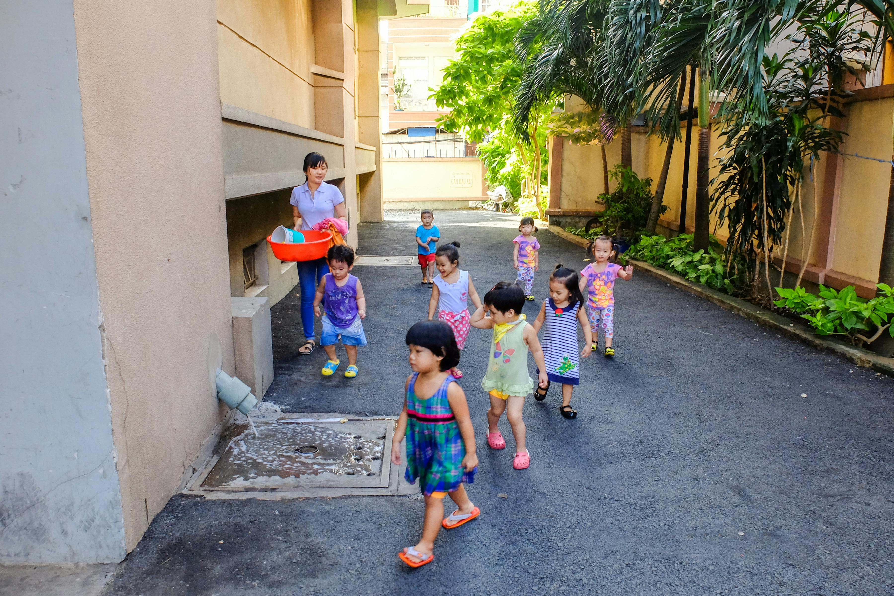

Our BioPod Solutions

Aerobic System Polishing BioPod
Filters treated effluent before soil dispersal, ensuring cleaner water release into the environment.
Learn more

Septic Field Saver BioPod
Protects your drainfield by polishing septic tank outflow, extending the life of your septic system.
Learn moreRainwater Runoff Polisher BioPod
Filters stormwater before it enters the environment, reducing pollutants in our waterways.
Learn more